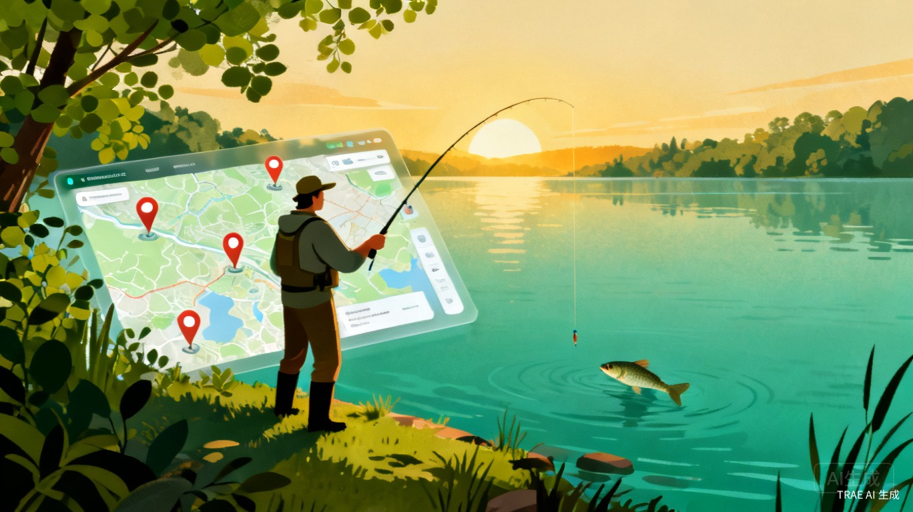
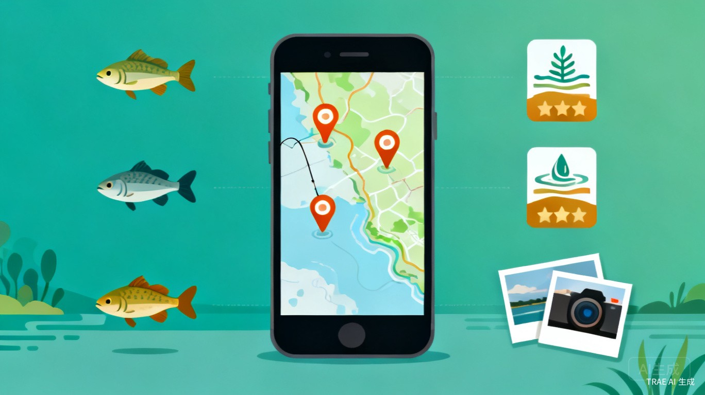
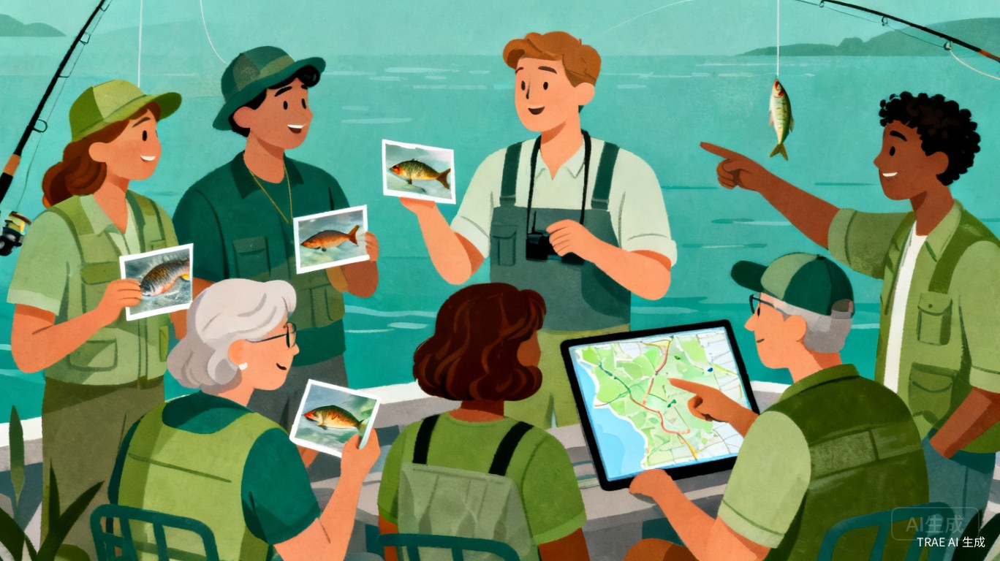

面向全体钓鱼爱好者的轻量化微信小程序，依托地图可视化精准展示周边优质钓点，打造真实、实时、便捷的全民钓点共享平台
本产品是一款面向全体钓鱼爱好者的轻量化微信小程序，核心依托地图可视化功能，精准展示用户周边各类优质钓鱼钓点。支持钓友自主上传、分享、标注真实钓点，同步附带钓点鱼种、水深、收费情况、垂钓体验、实拍图片等详细信息，同时可查看其他钓友的评价与最新鱼情。
解决钓友找钓点难、优质钓点信息闭塞、陌生水域垂钓踩坑的核心问题，打造真实、实时、便捷的全民钓点共享平台。
依托地图实时定位，自动筛选展示用户周边所有合规钓点，直观查看钓点分布
支持钓友自主上传、分享、标注真实钓点，附带鱼种、水深、收费等详细信息
查看其他钓友的实拍图片、真实评价与最新鱼情，避免踩坑
搭配距离、热度、钓点类型等多维筛选功能，一键精准查找目标钓点

核心用户为广大休闲野钓、黑坑垂钓、路亚垂钓的钓鱼爱好者，涵盖新手钓友、资深钓友、同城垂钓爱好者等全层级垂钓人群。
用户在以上场景中，均可打开小程序查询、参考、分享钓点，快速获取周边优质垂钓资源。
目前钓友缺乏专业的钓点查询平台，线下找钓点耗时费力，网络零散信息真假难辨、时效性差，常出现奔赴钓点后无鱼、水域废弃、收费混乱等踩坑问题。
结合日常垂钓体验，发现绝大多数钓友都有找钓点难、优质钓点不互通的困扰。现有社交平台钓点信息杂乱、无精准定位，小众优质野钓点难以传播，大众劣质钓点反复踩雷，因此萌生搭建专属钓点共享平台的想法。

小程序依托地图实时定位，自动筛选展示用户周边所有合规钓点，搭配距离、热度、钓点类型筛选功能，用户可一键查看钓点详细信息与真实钓友评价，无需盲目线下探查、无需筛选海量网络零散信息，大幅缩短找钓点的时间成本，彻底解决垂钓出行盲目踩坑的问题，极大提升钓友垂钓出行的整体效率。
同时UGC 实时更新模式，能保证钓点信息的时效性，及时剔除废弃、禁钓点位，保障用户查询精准度。